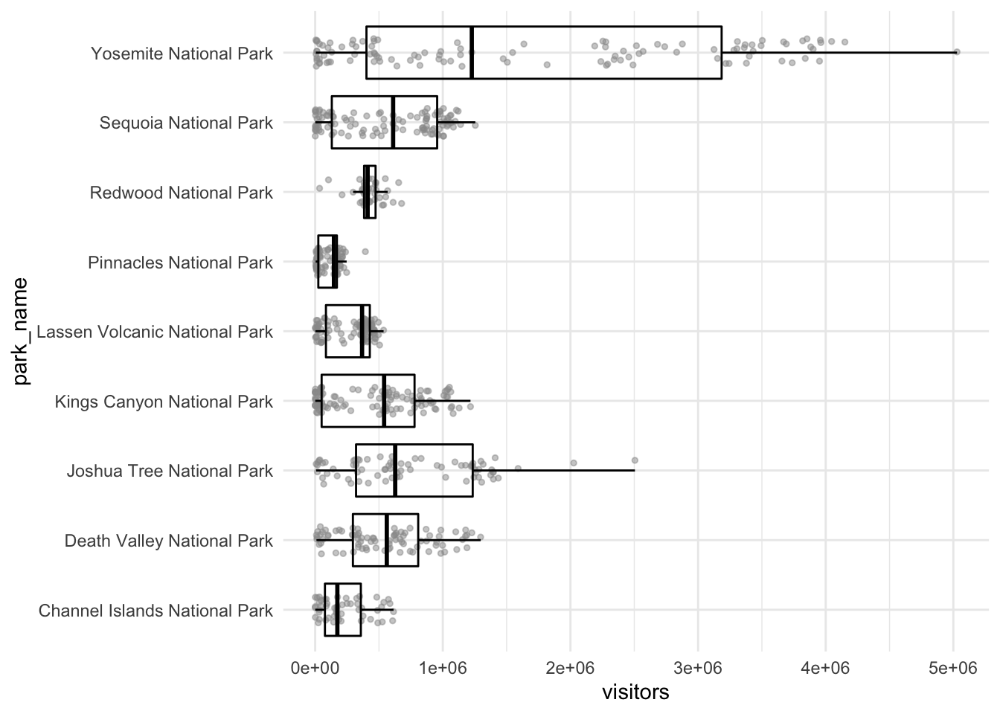
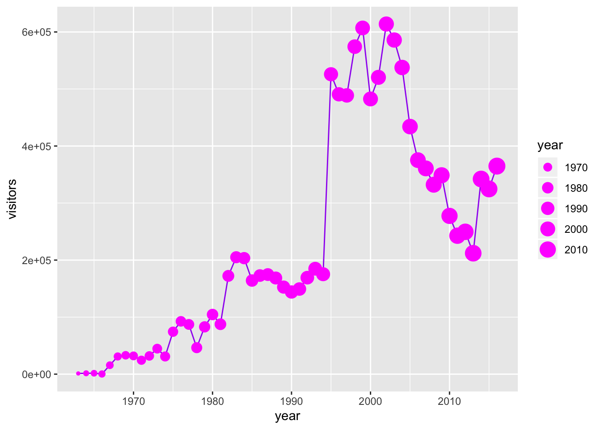
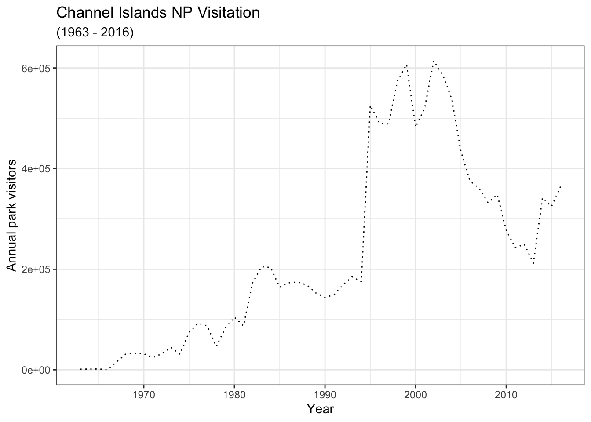
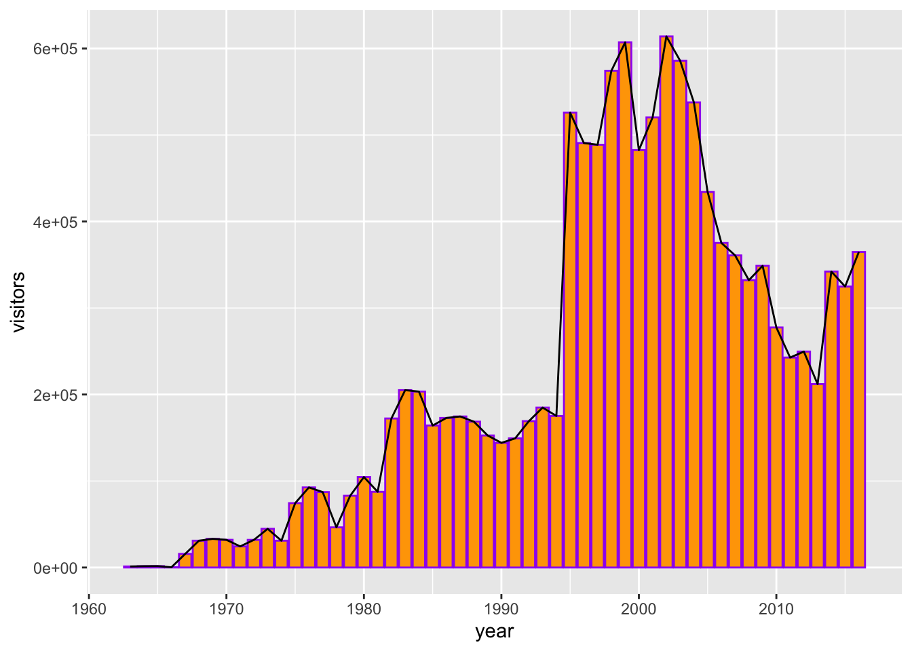

Chapter 5 Graphs with ggplot2
5.1 Summary
Now that we know how to get some data, the next thing we’ll probably want to do is look at it. In Excel, graphs are made by manually selecting options - which, as we’ve discussed previously, may not be the best option for reproducibility. Also, if we haven’t built a graph with reproducible code, then we might not be able to easily recreate a graph or use that code again to make the same style graph with different data.
Using ggplot2, the graphics package within the tidyverse, we’ll write reproducible code to manually and thoughtfully build our graphs.
“ggplot2 implements the grammar of graphics, a coherent system for describing and building graphs. With ggplot2, you can do more faster by learning one system and applying it in many places.” - R4DS
So yeah…that gg is from “grammar of graphics” - original source
We’ll use the ggplot2 package, but the function we use to initialize a graph will be ggplot, which works best for data in tidy format (i.e., a column for every variable, and a row for every observation). Graphics with ggplot are built step-by-step, adding new elements as layers with a plus sign (+) between layers (note: this is different from the pipe operator, %>%. Adding layers in this fashion allows for extensive flexibility and customization of plots.

5.1.1 Objectives
- Build several common types of graphs (scatterplot, column, line) in ggplot2
- Customize gg-graph aesthetics (color, style, themes, etc.)
- Update axis labels and titles
- Combine compatible graph types (geoms)
- Build multiseries graphs
- Split up data into faceted graphs
- Exporting figures with
ggsave()
5.2 Lesson
5.2.1 Getting started - Create a new .Rmd, attach packages & get data
Within your existing version-controlled R project, create a new R Markdown document with title “Data visualization with ggplot2.” Remove everything below the first code chunk. Knit and save the .Rmd file within your project working directory as “my_ggplot2”.
The ggplot2 package is part of the tidyverse, so we don’t need to attach it separately. Attach the tidyverse, readxl and here packages in the top-most code chunk of your .Rmd.
In this session, we’ll use data for parks visitation from two files:
- A comma-separated-value (CSV) file containing visitation data for all National Parks in California (ca_np.csv)
- A single Excel worksheet containing only visitation for Channel Islands National Park (ci_np.xlsx)
Add a new code chunk to read in the data from the data subfolder within your working directory.
Let’s take a quick look at the data to see what it contains. For example:
View(): to look at the object in spreadsheet formatnames(): to see the variable (column) namessummary(): see a quick summary of each variable
5.2.2 Our first ggplot graph: Visitors to Channel Islands NP
To create a bare-bones ggplot graph, we need to tell R three basic things:
- We’re using
ggplot - Data we’re using & variables we’re plotting (i.e., what is x and/or y?)
- What type of graph we’re making (the type of geom)
Generally, that structure will look like this:
Breaking that down:
- First, tell R you’re using
ggplot() - Then, tell it the object name where variables exist (
data = df_name) - Next, tell it the aesthetics
aes()to specify which variables you want to plot - Then add a layer for the type of geom (graph type) with
geom_*()- for example,geom_point()is a scatterplot,geom_line()is a line graph,geom_col()is a column graph, etc.
Let’s do that to create a line graph of visitors to Channel Islands National Park:

Or, we could change that to a scatterplot just by updating the geom_*:

We could even do that for a column graph:

Or an area plot…

We can see that updating to different geom_* types is quick, so long as the types of graphs we’re switching between are compatible.
The data are there, now let’s do some data viz customization.
5.2.3 Intro to customizing ggplot graphs
First, we’ll customize some aesthetics (e.g. colors, styles, axis labels, etc.) of our graphs based on non-variable values.
We can change the aesthetics of elements in a ggplot graph by adding arguments within the layer where that element is created.
Some common arguments we’ll use first are:
color =orcolour =: update point or line colorsfill =: update fill color for objects with areaslinetype =: update the line type (dashed, long dash, etc.)pch =: update the point stylesize =: update the element size (e.g. of points or line thickness)alpha =: update element opacity (1 = opaque, 0 = transparent)
Building on our first line graph, let’s update the line color to “purple” and make the line type “dashed”:
ggplot(data = ci_np, aes(x = year, y = visitors)) +
geom_line(
color = "purple",
linetype = "dashed"
)
How do we know which color names ggplot will recognize? If you google “R colors ggplot2” you’ll find a lot of good resources. Here’s one: SAPE ggplot2 colors quick reference guide
Now let’s update the point, style and size of points on our previous scatterplot graph using color =, size =, and pch = (see ?pch for the different point styles, which can be further customized).
ggplot(data = ci_np, aes(x = year, y = visitors)) +
geom_point(color = "purple",
pch = 17,
size = 4,
alpha = 0.5)
5.2.3.1 Activity: customize your own ggplot graph
Update one of the example graphs you created above to customize at least an element color and size!
5.2.4 Mapping variables onto aesthetics
In the examples above, we have customized aesthetics based on constants that we input as arguments (e.g., the color / style / size isn’t changing based on a variable characteristic or value). Sometimes, however, we do want the aesthetics of a graph to depend on a variable. To do that, we’ll map variables onto graph aesthetics, meaning we’ll change how an element on the graph looks based on a variable characteristic (usually, character or value).
When we want to customize a graph element based on a variable’s characteristic or value, add the argument within
aes()in the appropriategeom_*()layer
In short, if updating aesthetics based on a variable, make sure to put that argument inside of aes().
Example: Create a ggplot scatterplot graph where the size and color of the points change based on the number of visitors, and make all points the same level of opacity (alpha = 0.5). Notice the aes() around the size = and color = arguments.
Also: this is overmapped and unnecessary. Avoid excessive / overcomplicated aesthetic mapping in data visualization.
ggplot(data = ci_np, aes(x = year, y = visitors)) +
geom_point(
aes(size = visitors,
color = visitors),
alpha = 0.5
)
In the example above, notice that the two arguments that do depend on variables are within aes(), but since alpha = 0.5 doesn’t depend on a variable then it is outside the aes() but still within the geom_point() layer.
5.2.4.1 Activity: map variables onto graph aesthetics
Create a column plot of Channel Islands National Park visitation over time, where the fill color (argument: fill =) changes based on the number of visitors.

Sync your project with your GitHub repo.
5.2.5 ggplot2 complete themes
While every element of a ggplot graph is manually customizable, there are also built-in themes (theme_*()) that you can add to your ggplot code to make some major headway before making smaller tweaks manually.
Here are a few to try today (but also notice all the options that appear as we start typing theme_ into our ggplot graph code!):
theme_light()theme_minimal()theme_bw()
Here, let’s update our previous graph with theme_minimal():
ggplot(data = ci_np, aes(x = year, y = visitors)) +
geom_point(
aes(size = visitors,
color = visitors),
alpha = 0.5
) +
theme_minimal()
5.2.6 Updating axis labels and titles
Use labs() to update axis labels, and add a title and/or subtitle to your ggplot graph.
ggplot(data = ci_np, aes(x = year, y = visitors)) +
geom_line(linetype = "dotted") +
theme_bw() +
labs(
x = "Year",
y = "Annual park visitors",
title = "Channel Islands NP Visitation",
subtitle = "(1963 - 2016)"
)
Note: If you want to update the formatting of axis values (for example, to convert to comma format instead of scientific format above), you can use the scales package options (see more from the R Cookbook).
5.2.7 Combining compatible geoms
As long as the geoms are compatible, we can layer them on top of one another to further customize a graph.
For example, adding points to a line graph:
ggplot(data = ci_np, aes(x = year, y = visitors)) +
geom_line(color = "purple") +
geom_point(color = "magenta",
aes(size = year))
Or, combine a column and line graph (not sure why you’d want to do this, but you can):
ggplot(data = ci_np, aes(x = year, y = visitors)) +
geom_col(fill = "orange",
color = "purple") +
geom_line()
5.2.8 Multi-series ggplot graphs
In the examples above, we only had a single series - visitation at Channel Islands National Park. Often we’ll want to visualize multiple series. For example, from the ca_np object we have stored, we might want to plot visitation for all California National Parks.
To do that, we need to add an aesthetic that lets ggplot know how things are going to be grouped. A demonstration of why that’s important - what happens if we don’t let ggplot know how to group things?

Well that’s definitely a mess, and it’s because ggplot has no idea that these should be different series based on the different parks that appear in the ‘park_name’ column.
We can make sure R does know by updating an aesthetic based on park_name:

Note: You could also add that aesthetic (color = park_name) in the geom_line() layer, instead of in the topmost ggplot() layer.
5.2.9 Faceting ggplot graphs
When we facet graphs, we split them up into multiple plotting panels, where each panel contains a subset of the data. In our case, we’ll split the graph above into different panels, each containing visitation data for a single park.
Also notice that any general theme changes made will be applied to all of the graphs.
5.2.10 Exporting a ggplot graph with ggsave()
If we want our graph to appear in a knitted html, then we don’t need to do anything else. But often we’ll need a saved image file, of specific size and resolution, to share or for publication.
ggsave() will export the most recently run ggplot graph by default (plot = last_plot()), unless you give it the name of a different saved ggplot object. Some common arguments for ggsave():
width =: set exported image width (default inches)height =: set exported image height (default height)dpi =: set dpi (dots per inch)
So to export the faceted graph above at 180 dpi, width a width of 8" and a height of 7", we can use:
Notice that a .jpg image of that name and size is now stored in your project working directory. You can change the type of exported image, too (e.g. pdf, tiff, eps, png, mmp, svg).
5.2.11 One final graph example: jitter and boxplots
For the record: this is not a good option for showing the visitation data because values are not independent observations of a random variable. But, for the purposes of showing a graph, we’ll use visitation as our continuous measured variable in a jitter + boxplot anyway.
ggplot(data = ca_np, aes(x = park_name, y = visitors)) +
geom_jitter(alpha = 0.5,
color = "gray60",
width = 0.2,
size = 1) +
geom_boxplot(fill = NA,
color = "black",
outlier.color = NA) +
coord_flip() +
theme_minimal()Sync your project with your GitHub repo.